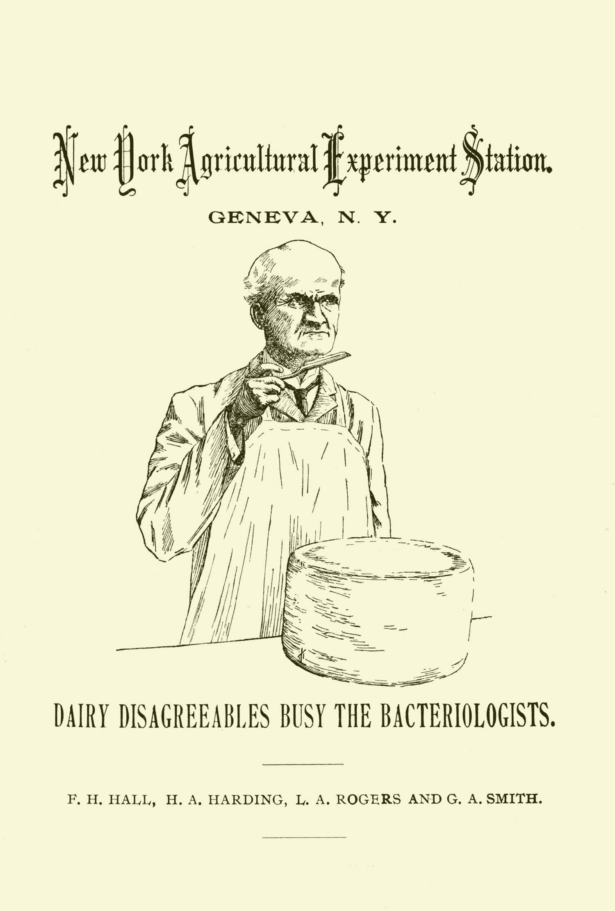
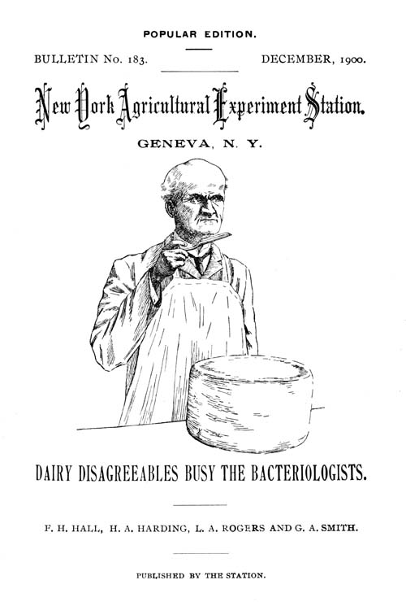
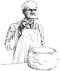

POPULAR EDITION.
BULLETIN No. 183. DECEMBER, 1900.
New York Agricultural Experiment Station.
GENEVA, N. Y.

F. H. HALL, H. A. HARDING, L. A. ROGERS AND G. A. SMITH.
PUBLISHED BY THE STATION.
BOARD OF CONTROL.
Governor Theodore Roosevelt, Albany.
Stephen H. Hammond, Geneva.
Austin C. Chase, Syracuse.
Frank O. Chamberlain, Canandaigua.
Frederick C. Schraub, Lowville.
Nicholas Hallock, Queens.
Lyman P. Haviland, Camden.
Edgar G. Dusenbury, Portville.
Oscar H. Hale, North Stockholm.
Martin L. Allen, Fayette.
OFFICERS OF THE BOARD.
Stephen H. Hammond, President.William O’Hanlon, Secretary and Treasurer.
EXECUTIVE COMMITTEE.
| Stephen H. Hammond, | Frederick C. Schraub, |
| Martin L. Allen, | Lyman P. Haviland, |
| Frank O. Chamberlain, | Nicholas Hallock. |
STATION STAFF.
| Whitman H. Jordan, Sc. D., Director. | |
| George W. Churchill, | Harry A. Harding, M.S., |
| Agriculturist and Superintendent of Labor. | Dairy Bacteriologist. |
| William P. Wheeler, | Lore A. Rogers, B.S., |
| First Assistant (Animal Industry). | Assistant Bacteriologist. |
| Fred C. Stewart, M.S., | George A. Smith, |
| Botanist. | Dairy Expert. |
| Lucius L. VanSlyke, Ph.D., | Frank H. Hall, B.S., |
| Chemist. | Editor and Librarian. |
| Christian G. Jenter, Ph.C., | Victor H. Lowe, M.S., |
| William H. Andrews, B.S.,[A] | F. Atwood Sirrine, M.S.,[C] |
| J. Arthur LeClerc, B.S., | Entomologists. |
| Amasa D. Cook, Ph.C.,[B] | Percival J. Parrott, A.M., |
| Frederick D. Fuller, B.S., | Assistant Entomologist. |
| Edwin B. Hart, B.S.,[B] | Spencer A. Beach, M.S., |
| Charles W. Mudge, B.S.,[A] | Horticulturist. |
| Andrew J. Patten, B.S.,[A] | Heinrich Hasselbring, B.S.A., |
| Assistant Chemists. | Assistant Horticulturist. |
| Frank E. Newton, | |
| Jennie Terwilliger, | |
| Clerks and Stenographers. | |
| Adin H. Horton, | |
| Computer. | |
Address all correspondence, not to individual members of the staff, but to the New York Agricultural Experiment Station, Geneva, N. Y.
The Bulletins published by the Station will be sent free to any farmer applying for them.
Popular Edition[D]
OF
Bulletin No. 183.
DAIRY DISAGREEABLES BUSY THE BACTERIOLOGISTS.
F. H. HALL.
Good flavor sells milk, cream, butter and cheese; poor flavor condemns them. Flavor is that indescribable something, which, in good dairy products, appeals pleasantly to our senses, but often passes unnoticed because so familiar; in poor products it is equally indescribable, but more often characterized in vigorous language, when “frowzy” butter, “garlicy” milk, “bitter” cream or “strong” cheese present their offensive odors and tastes. The ordinary consumer calls flavor the “taste” of the article which tickles his palate; but the expert knows that the nerves of smell play the larger part, and he depends for his judgment largely upon a trained nose. Hence we see the butter judge or cheese scorer pass the trier beneath his nostrils with deep-drawn breath and meditative study of the aroma which arises. Smells, however, cannot be measured in degrees or separated into their elements by the spectroscope; therefore we have to depend upon general terms, often differing with the different experts, in our discussion of flavor; yet we have some well-marked classes which serve as a basis for reference.
[4]
We can separate the faulty flavors into classes by their origin. The minute particles thrown off by dairy products, whose impact upon tongue or nostrils give rise to taste or smell, may come (1) from compounds in the food of the cow or developed in her body (2) from matters, other than germs, taken up by the milk while it stands in poorly-ventilated stables or rooms reeking with foul smells, or (3) from substances which are the direct or indirect result of the activity of living organisms in the milk.
Odors of the first class will be most noticeable while the milk is warm from the cow and will not increase with time. They are really far less common than dairymen generally believe and may be avoided almost entirely by careful feeding. Garlic, turnips, cabbage and such “fragrant” edibles will, of course, taint the milk if they are fed within a few hours before milking; but when fed soon after the cows are milked, the volatile oils to which these odors are due will generally disappear from the animal’s system before the next morning or evening.
Too often odors of the second class are assigned to the first, and the old cow takes the blame for man’s fault; as milk very readily and quickly takes up smells and tastes from its surroundings. When the owner delivers milk to the factory and is told that it “smells bad,” he forgets that he or his men let it stand in the uncleaned stable to draw in the “cowy” and worse odors, while the cows were being fed and some other chores attended to; or that they poured it into pails that lacked a little of perfect sweetness; and he immediately says; “I’ve got to stop feeding silage.” “The cows ate some cabbage trimmings last night,” or, “Someone forgot to close the rye-field gate.”
Odors of these two classes, due to volatile compounds in the milk, are of most importance in the milk and cream trade, as the faults largely disappear in making butter and cheese. Thorough æration is often helpful in the removal of such flavors.
Odors of the third class, except in some very rare cases where the udder itself is the seat of colonies of bacteria, are not observed in freshly-drawn milk. The bacteria, molds and yeasts which cause them must have a chance to develop and to set up chemical changes in the milk; and this rarely occurs to any great extent[5] within 12 hours from the time the milk is drawn. A high temperature, however, is favorable to growth of these low forms of plant life; so in warm weather milk faults are common. In butter-making, and in cheese-making, also, the heat often used to ripen the cream and the high temperature at which the milk is held in “setting” and “cooking” the curd, furnish conditions very favorable to the germs present and they develop with great rapidity. In their growth part of the milk is used for food and in its breaking down into simpler compounds the aromatic substances which make flavor, good or bad, are formed.
The flavor of good milk and cream, then, is an inherent quality due to the normal constituents of the milk; the flavors of butter, both good and bad, except that due to the fat and to odors absorbed by the milk, are held to be the result of bacterial action; the fundamental flavors of cheese are probably due to chemical decomposition, started by unorganized ferments known as enzyms; joined with which are other flavors marking the individual cheeses, which are probably due to bacteria; and it has recently been found that in some cases yeasts have been the cause of bad flavor.
This peculiar smell, as though the milk had set in a close room with a barrel of not-too-fresh fish, was brought to the attention of the Bacteriologist by a dealer who had already located it as coming from the milk of a certain dairy. The dairyman is a more than ordinarily careful milk-handler, who gladly coöperated with the Station in efforts to locate the trouble in his herd. Bottles were supplied by the Bacteriologist, which had been steamed to insure the death of all germ life and then sealed. These sealed bottles were taken by the dairyman to his farm; at milking time each was opened long enough to receive a little milk from each quarter of the udder of a single cow; and then re-sealed. All were brought to the Station; and, upon examination, the odor was found only in the milk of one cow. The owner rejected her milk and heard no further complaint, from the dealer, of bad smells. This was the practical point; and it was thus easily and simply gained.
[6]
From the scientist’s standpoint, though, only a beginning had been made; the real cause of the trouble was as yet unknown; nor was any satisfactory solution reached even after a long investigation. The flavor could hardly come from the food, for all the cows were fed alike and no objectionable weeds were found in their pasture. The cow seemed perfectly healthy and no evidence of inflammation or disease could be found on the udder or in the milk. Neither could any form of bacteria be found in the milk, which, in cultures or introduced into the udder of a healthy cow, would reproduce the fishy smell.
At least two other cases of similar flavor have been known; but no cause was evident in either case. The trouble is very infrequent, at worst, and is here discussed mainly to show how easily a trouble due to one cow can be located by taking individual samples of the milk; and how cheaply gotten rid of by leaving out the objectionable product.
A little better result than that in the study of fishy flavor was reached in the investigation of a bitter flavor in Neufchatel cheese; but this study also had to be left incomplete. The trouble in the factory was easily remedied; and the germ responsible for the outbreak was obtained in pure culture; but full study of the fault in all its bearings was hindered by the refusal of the herd owner to admit that the trouble was due to his milk. The investigation had to stop with the guilty herd; it did not locate the original source of infection.
This bitter flavor is not the same as the bitterness quite common in milk and cream at certain seasons of the year; as the milk itself tasted and smelled all right until well along in the process of cheese-making when the curd was being ærated and drained. The flavor was noticed in the factory in October and could not be checked, though the maker took great pains to wash and scald all his utensils and everything which touched the milk after it came from the farm. To locate the trouble, samples were taken of the milk of[7] each patron and the cheese-making process started with each sample. In 18 hours all the samples of curd appeared normal but two, which were gassy and bad-smelling; and one of these, when drained and exposed to the air, showed a pronounced bitter flavor. This sample proved to be from the dairy which had furnished the milk for making the Neufchatel, a milk specially selected because of its high fat-content. This furnished direct proof that the fault lay in the milk, not in its factory handling; and rejection of this milk ended the trouble in the Neufchatel. As already stated, the study could not be carried into the herd to see whether one cow, wrong stable surroundings, a stagnant pool of water or contaminated dairy utensils were to blame for the trouble in the factory.
Samples of this faulty milk were taken for laboratory study and various bacteria and molds were separated. This was done by diluting the milk with a sterilized fluid so that the germs were quite widely separated when the milk was poured out in flat glass dishes. Each kind of germ is marked by some peculiarity of growth which makes it possible to distinguish between them; and pure cultures can be made by transferring a little of the growing colony to a new dish of sterilized agar, gelatin or other material suited to germ life. From these pure cultures fresh milk from the Station herd was inoculated and small Neufchatel cheeses made. No bitter flavor was noticed in similar check cheeses; and the milk containing only one of the forms of germ life found produced bitter cheese. The bitterness, as in the factory, was noticed only after the curd was drained and ærated. Soft, poorly-drained curd was free from the flavor though well inoculated with the short bacillus which produced the bad flavor in well-dried curd. This shows that the germ is one which requires exposure to the air to develop the bitter compound in the cheese. Unfortunately this germ, when cultivated in milk for some time lost the power of producing bitter cheese, so the investigation came to an end.
[8]
By methods similar to those just given the cause of the common and costly cheese fault known as “sweet flavor” has probably been found. This investigation was demanded by the occurrence in some of the best-conducted factories of outbreaks of the trouble which most thorough cleansing and scalding fail to overcome. It is believed that these attacks result in annual loss to the State of at least $10,000. The trouble is of obscure origin and is peculiar in its development, manifesting itself in flavors of varying intensity and character, from a faint sweetness to a well-marked fruity smell and taste, and seeming to appear and disappear without rule or method. This made study more difficult than in the case of well-defined troubles; but its manner of development in the cheese indicated some living germ as the cause; so the attempt at solution of the problem was made from that standpoint.
By cultural methods, study was made of the flora of good and poor cheeses; that is, the various forms of plant life existing in these cheeses were separated from each other and their forms, actions and effects noted. These forms of life were mostly bacteria and yeasts; and, contrary to the usual rule, it was the latter which finally seemed to demand attention.
Yeasts are plants a little higher in the scale of life than bacteria, a little larger but still microscopic, and differing from bacteria in their mode of reproduction, which is by budding of a new cell from an old one rather than by division of an old cell into two new ones of equal size. Their most characteristic action is the formation of alcohol and carbon dioxide; which makes them indispensable in brewing and bread making.
In good cheeses almost no yeasts were found, but in the sweet-flavored cheeses sometimes half of the germs present were yeasts; and they were always found where the sweet flavor was noticed. Yeasts have not been recognized, hitherto, as a cause for such cheese faults; but their presence in such numbers cast strong suspicion upon them; which actual work proved to be well founded, for pronounced cases of sweet flavor developed in cheeses made from pure milk inoculated with the yeasts; and the vat in which the cheese was made became contaminated so that, without[9] further intentional inoculation, sweet-flavored cheese was produced where none had been known before. As yeasts have hitherto played minor parts in dairy investigations, no classification of those found has yet been made, nor has the exact flavor due to each one been determined. Further study is being given to the subject.
Rusty spot is not a flavor trouble, as spotted cheeses of this kind may be all right in taste and smell. The spots, however, are offensive to the eye and render the cheese salable only at a reduction in price, if at all. From the Station investigations, continued for nearly two years, along much the same lines as the flavor studies but with a little more definite guide in color than in taste and smell, some direct knowledge has been gained, though not as definite as could be desired along preventive and remedial lines.
The rusty spots are colonies of minute plants, bacteria, growing on the walls of the air spaces within the cheese. The trouble usually appears in May, often does little harm during the middle of the summer and generally disappears in October. In cheese made with a high acid content the moisture content of the air spaces within the cheese is low, and without abundance of moisture the germs make little growth; hence the spots are too small to be noticed. The marked influence, on the germs of rusty spot, of this slight variation in the character of the cheese probably accounts for the unexpected appearance and disappearance of the spots from cheeses of an occasional day’s make in infected factories.
Where the spots are not too large or too plentiful, giving the cheese a good high color covers up the rustiness so that it is not noticeable. To get entirely rid of the trouble has bothered some of the best cheese-makers, aided by good advisers; but plenty of hot water followed by a liberal use of live steam on vats, cans and working utensils should give good results.
FOOTNOTES:
[A] Connected with Fertilizer Control.
[B] At Second Judicial Department Branch Station, Jamaica, N. Y.
[C] Absent on leave.
[D] This is a brief review of Bulletin No. 183 of this Station entitled Notes on Some Dairy Troubles, by H. A. Harding, L. A. Rogers and G. A. Smith. Anyone specially interested in the detailed account of the investigations will be furnished, on application, with a copy of the complete bulletin. The names of those who so request will be placed on the Station mailing list to receive future bulletins, popular or complete as desired. Bulletins are issued at irregular intervals as investigations are completed, not monthly.
TRANSCRIBER’S NOTE:
The cover image for this eBook was created by the transcriber and is entered into the public domain.